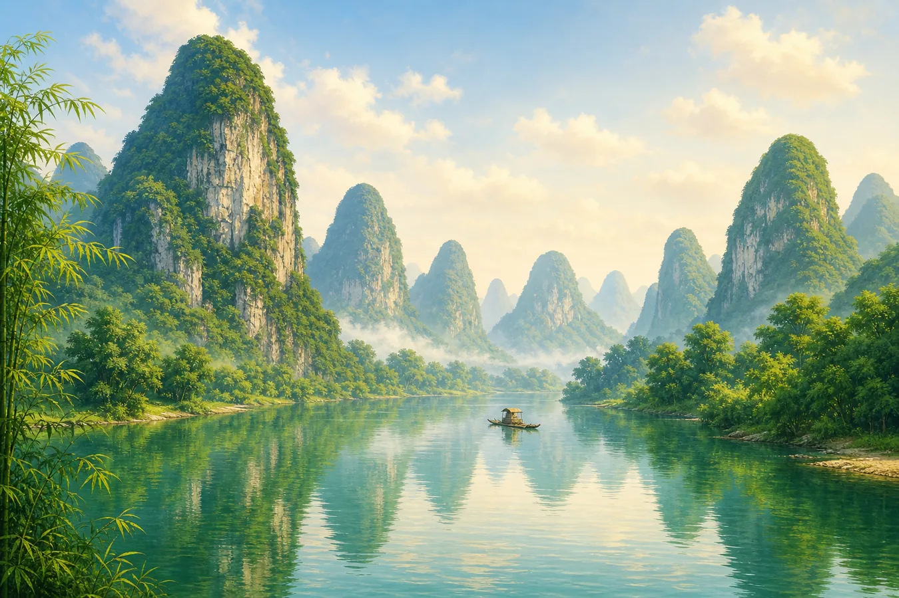
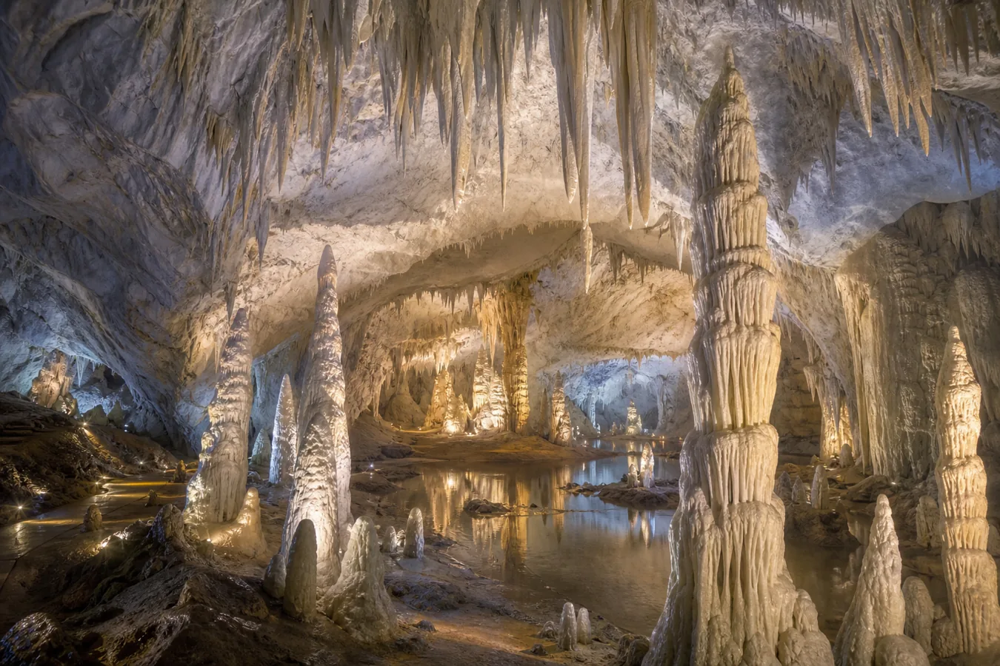

桂林：二十元纸币里藏着怎样的山水？
Guilin: Reading the Landscape on a 20-Yuan Note
阅读难度 · 中等Reading level · Medium
Page 1
把纸币举到江边，为什么对不严丝合缝？
Why Doesn't the Banknote Match the River Exactly?

This teaching illustration pairs a 20-yuan note with Guilin scenery; it is not a photograph of an exact viewpoint.
如果你把一张二十元人民币翻到背面，会看到几座尖峰立在水边，一条小船从倒影中划过。中国人民银行把这幅图称为“桂林山水”。不少旅游资料又把它和阳朔兴坪附近的黄布倒影一带联系起来。
可是，你若真的把纸币举到江边，山峰未必每一道都能完全重合。纸币上的画面经过设计和雕刻，附近的元宝山、黄布倒影也常被不同资料分别提到。比较稳妥的说法是：它表现的是兴坪附近很有代表性的漓江山水，不必把它当成照相机在一个点上拍下的照片。
现在官方漓江游船通常从桂林市区外的磨盘山或竹江码头出发，到阳朔约六十一公里。船一转弯，眼前的山便换一组，像有人把一幅长画慢慢拉开。纸币抓住的是这种风景的样子，却装不下沿途全部的变化。
Turn over a Chinese 20-yuan note and you will see steep peaks beside the water, with a tiny boat crossing their reflections. China's central bank calls the picture “Guilin scenery.” Tourism materials often connect it with the Huangbu Reflection stretch of the Li River near Xingping in Yangshuo.
Yet if you hold the note up beside the river, every ridge may not line up perfectly. The banknote image was designed and engraved, and local sources do not always name the same nearby feature as its exact background. The safest description is that it represents the famous Li River scenery around Xingping - not that it is a photograph taken from one guaranteed spot.
Today's official sightseeing cruise usually begins at Mopan Mountain or Zhujiang wharf outside central Guilin and travels about 61 kilometers to Yangshuo. Each bend rearranges the peaks, almost as if someone were slowly unrolling a long painting. The banknote captures the character of the view, but it cannot hold the whole journey.
Page 2
水很重要，但它不是唯一的“雕刻家”
Water Mattered, but It Did Not Work Alone

A teaching illustration of Guilin's tower karst; the real landforms were shaped by several processes over immense spans of time.
桂林的山为什么不像一条连在一起的山脉，反而一座一座从平地上升起？故事要从石灰岩说起。很久以前，这一带曾有海洋环境，海中形成的碳酸盐沉积物后来变成厚厚的石灰岩。再后来，地壳运动让岩层抬升、破裂，雨水和地下水便有了可以进入的缝隙。
雨水穿过空气和泥土时会吸收二氧化碳，变成很弱的酸性水。它沿着裂缝慢慢溶解石灰岩，地下水扩大洞穴，河流也切割地面、搬走泥沙；岩石有时还会崩塌。比较容易被溶解和侵蚀的部分逐渐降低，较坚硬的残余岩体便显得越来越高。
这类地形叫喀斯特地貌。桂林既有许多山峰挤在一起的峰丛，也有一座座分开的塔状峰林，并因此成为“中国南方喀斯特”世界遗产的一部分。所以，说这些山是“水雕出来的”很有画面感，却只讲对了一部分：岩石的材料、裂缝、抬升、溶解、河流侵蚀和崩塌，都参加了这场极慢的塑形。
Why do Guilin's peaks rise one by one from low ground instead of forming a single connected ridge? The story begins with limestone. Long ago, this region had marine environments where carbonate sediment collected and eventually became thick beds of rock. Later, movements of Earth's crust lifted and cracked those beds, giving rain and groundwater paths into the stone.
As rain passes through air and soil, it picks up carbon dioxide and becomes weakly acidic. It slowly dissolves limestone along cracks. Groundwater enlarges caves, rivers cut into the land and carry sediment away, and weakened rock sometimes collapses. Lower areas wear down while tougher pieces remain standing above them.
This kind of landscape is called karst. Guilin has both clusters of cone-shaped peaks and separate tower-like peaks, and it is part of the UNESCO-listed South China Karst. Calling the mountains “water sculptures” makes a lovely picture, but it leaves out most of the team: rock type, cracks, uplift, chemical dissolving, river erosion, and collapse all helped shape them over an immense span of time.
Page 3
洞穴在变大，石笋却在生长
A Cave Grows Larger While a Stalagmite Grows Taller

An illustrative view of Silver Cave; its bright colors mainly come from modern visitor lighting, not glowing rock.
同一滴水，竟然能做两件相反的事。在地面下，它带着一点酸性，溶解石灰岩，把细小裂缝扩大成通道和洞室。可是当水滴进入有空气的洞穴，失去一部分二氧化碳时，原先溶在水里的方解石又可能沉积出来。
沉积物从洞顶向下长，形成钟乳石；落到地面后向上堆积，形成石笋。有时上下两端接在一起，就成了石柱。这个过程常常很慢，却没有“一百年一定长一厘米”这样的统一速度。雨量、滴水速度、洞内二氧化碳和水经过的裂缝都会改变生长速度，有的地方甚至会暂时停止沉积。因此，不能拿一根石笋的高度直接当作它的年龄尺。
银子岩是阳朔附近经过开发的游览洞穴。今天游客沿着步道观看，灯光把石柱照得像银色宫殿；这是一种现代展示方式。真正值得惊叹的不是一句夸张的“亿万年奇观”，而是水先带走石灰岩，又把一小部分矿物留下来的往返过程。
The same drop of water can do two opposite jobs. Underground, weakly acidic water dissolves limestone and widens tiny cracks into passages and chambers. But when a drop enters an air-filled cave and releases some of its carbon dioxide, dissolved calcite may be left behind again.
Deposits growing down from the ceiling form stalactites. Deposits building upward from the floor form stalagmites. If the two meet, they can become a column. This growth is often slow, but there is no universal rule that every formation grows one centimeter in 100 years. Rainfall, drip speed, cave-air carbon dioxide, and the route water takes through the rock all change the rate. Growth may even pause, so the height of a stalagmite is not a simple ruler for its age.
Silver Cave near Yangshuo is a developed visitor cave. Today, people follow a walkway while modern lights make the formations look like a silver palace. The deeper wonder is not a dramatic slogan about age. It is the two-way journey in which water first removes limestone and later leaves a little of the mineral behind.
Page 4
“像山水画”到底像在哪里？
What Makes the River Feel Like a Chinese Landscape Painting?

This teaching illustration places scenery beside an ink painting; Chinese landscapes do not always copy one real location.
中文里的“山水画”，字面上就是画山和水。许多长卷不是让人一次看完，而是随着画卷一点点展开，让视线穿过山路、溪流和云雾。坐船游漓江也有相似的节奏：前一座峰挡住视线，船转过弯，另一片空间才出现。
画面中没有落墨的白纸也能发挥作用。它可能让人想到水面、天空、雾气或遥远的距离，但要看它在画中的位置，不能说“所有留白都是水”。不同年代、不同画家的方法也不一样。有些作品重视细致观察，有些文人画更看重笔墨怎样传出心情和个性；“写意”不是随便画，也不等于所有中国画都不在乎真实景物。
桂林很适合帮助人理解“人在画中游”的感觉，却不是中国山水画唯一的来源。画家也会记画真实地点、重新安排景物，或干脆创造想象中的山川。漓江像画，不是因为画家都在复制桂林，而是因为河流、层层远山和雾气，让观看本身变成了一段慢慢展开的旅程。
The Chinese term shanshui painting literally means “mountain-and-water painting.” A handscroll is often revealed a little at a time, allowing the viewer's eyes to travel past paths, streams, and mist. A boat trip on the Li River has a similar rhythm: one peak blocks the view, the boat rounds a bend, and another space opens.
Unpainted paper can also do important work. Depending on its place in the picture, it may suggest water, sky, mist, or faraway distance. That does not mean every blank area is water. Chinese artists also worked differently across periods. Some paid close attention to observed forms, while some scholar-artists cared especially about how brushwork expressed mood and character. “Freehand expression” did not mean careless drawing, and it was never the only way to paint.
Guilin helps us feel what people mean by “traveling inside a painting,” but it was not the single source of Chinese landscape art. Painters recorded real places, rearranged them, or invented mountains of the imagination. The Li River feels painting-like not because every artist copied Guilin, but because water, layered peaks, and mist turn looking into a journey that unfolds slowly.
再看一次那张纸币
Look at the Banknote Again
现在再看二十元纸币，画面里藏着的就不只是一处“打卡点”。海中的沉积物变成石灰岩，岩层被抬升和切开，酸性水扩大裂缝，河流搬走泥沙，洞里的滴水又重新留下矿物。人们最后把这片复杂的地貌刻进纸币、照进旅游灯光，也比作缓缓展开的山水长卷。一小张纸装不下桂林，却能成为读懂它的第一条线索。
Look at the 20-yuan note again, and it becomes more than a marker for one photo stop. Marine sediment became limestone; rock beds rose and cracked; weakly acidic water widened the openings; rivers carried material away; and cave drips left some minerals behind again. People later engraved this complicated landscape on money, illuminated its caves for visitors, and compared its river journey to an unfolding handscroll. One small note cannot contain Guilin, but it can offer the first clue for reading it.